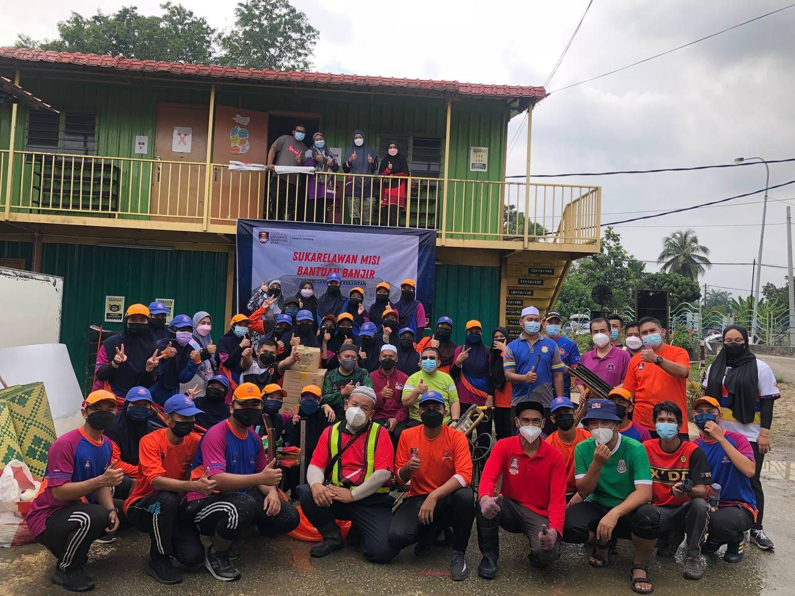

2018 - Beginning at the beginning of 2018, I joined the school jump rope team and competed at the district, state, and national levels. I competed at the national level three times before receiving the consolation prize of fifth place in the national sports day held in Bukit Jalil.
2018 - Beginning at the beginning of 2018, I joined the school jump rope team and competed at the district, state, and national levels. I competed at the national level three times before receiving the consolation prize of fifth place in the national sports day held in Bukit Jalil.
2019 - I joined the school's fire and rescue cadets when I was 13 years old, in 2015. However, in my last year of high school, 2019, I qualified to attend the Malaysian fire and rescue cadet camp at the national level, representing the state of Kelantan. Tangok Curriculum Center in Bachok, Kelantan, hosted this camp.
2020 - After graduating from high school at the end of 2019. I began my search for job experience by volunteering at a restaurant near my house. In 2020, one of the locations where I acquired job experience was Edde's restaurant. My goal in working is to occupy the time I have between waiting for SPM results and accepting any study offers. till I was ultimately accepted into UiTM for the October 2020-February 2021 semester.
 2021 - I became a SISPA commander after registering as an UiTM student. SISPA provided me with a wealth of experience in addition to Civil Defense expertise. My friends and I were among them in 2021, when we travelled to Shah Alam for a day-long post-flood mission.
2022 - In addition, I took part in the Kelantan state level Independence Day procession with the Kelantan State Civil Defense Force on August 31, 2021, at the Ketereh Mini Stadium in Kelantan.